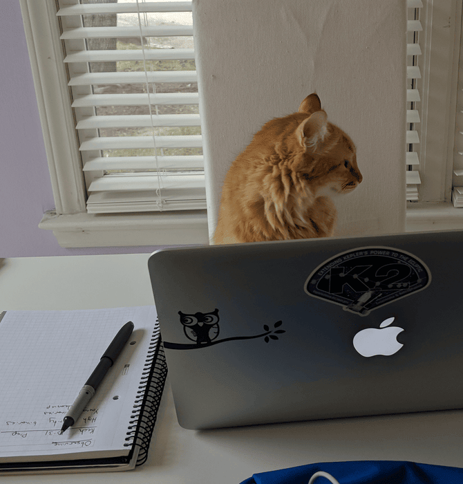
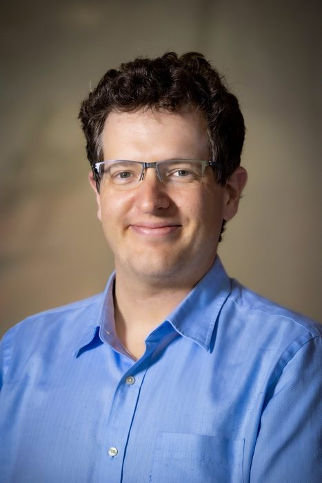
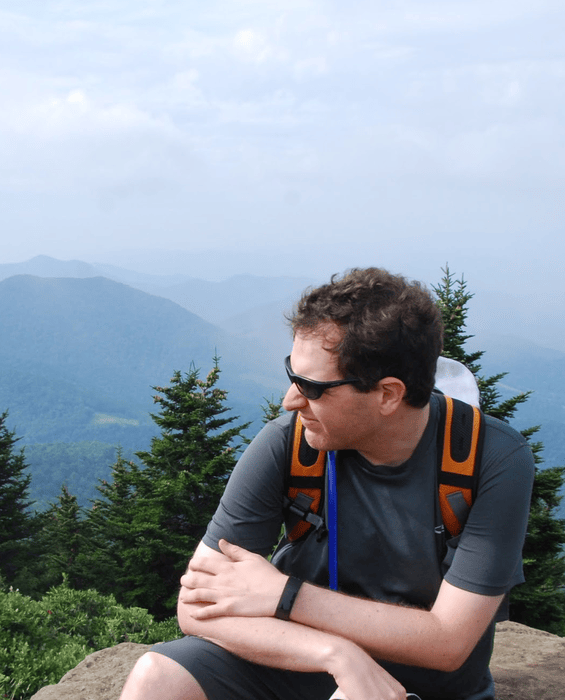

I'm currently an associate professor at the University of North Carolina at Chapel Hill.
Our team studies planetary evolution, focusing on young (100-1000 Myr) and infant (0-100 Myr) exoplanets to uncover early processes shaping planetary systems, including young Earth analogs.
We analyze exoplanet statistics (occurrence rates, population parameters, binarity) using data from Kepler, K2, and TESS missions. Our work includes studying late-type and young stars, employing advanced computational methods like machine learning to handle extensive datasets and address astrophysical noise.
Team members also investigate young and low-mass stars to better understand their planetary systems.
We are involved in small-scale NASA missions, including Pandora and the proposed EVE mission.
Our major projects, including the THYME, TIDYE, and TARS surveys, are described on the Research page.
You can see a full listing of my papers from ADS or Google Scholar.
Read about other members of the Young Worlds Lab on the Team page.
Find me on Bluesky, LinkedIn, or email me at awmann@unc.edu.



AI Disclosure: The original website, design, and content were made by Andrew Mann with help from Aaron Larner. The most recent update (October 2026) used Claude Code to convert the site to Jekyll, optimize the code and images, check the text for accuracy and grammar, and help with the GitHub implementation. All changes were reviewed by Andrew Mann.